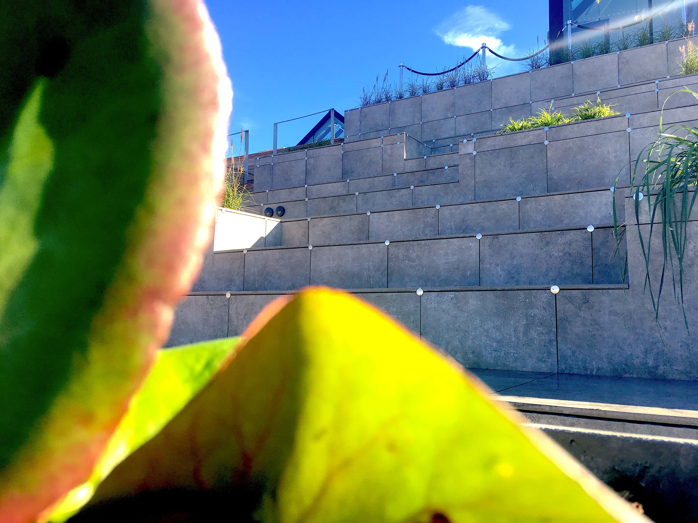

Case 1.3: Responsive webdesign
Café Stiften
Refleksion
Case 1.3 var gruppeprojekt nummer 2, hvor hovedformålet var at producere en responsive hjemmeside, så den kan anvendes på både computer, tablet og telefon. Siden vi skulle producere i denne case, skulle tage udgangspunkt i en selvvalgt virksomhed, som endnu ikke havde en responsive hjemmeside. I vores gruppe valgte vi at producere en hjemmeside for ’Café Stiften’, som er en café i Århus. Virksomheden har en hjemmeside, som ikke er responsive, og en hjemmeside som halter hvad angår design, derfor var det oplagt at producere en ny hjemmeside til denne virksomhed.
Design Case 1.3
I case 1.3 var der rig mulighed for at arbejde med den kritik, som blev givet som respons på case 1.2. I arbejdet med case 1.3 blev der lagt langt større fokus på designproces, end der var gjort ved tidligere cases. Herunder var der udarbejdet mockups af både mobilversion og laptopversion, en grundig logoproces og flere diskussioner frem og tilbage i forhold til hvordan hjemmesiden skulle se ud, for så til sidst, at have et endeligt resultat, som vi kunne kode hjemmesiden ud fra. Hvad angår viden indenfor designfaget var det ikke så forskelligt fra case 1.2, men der hvor de adskiller sig fra hinanden er uden tvivl grundigheden omkring designet. I forhold til case 1.2, var der en tydelig forskel på hvordan det hele forløb, og det viste sig, at på trods af, at man bruger en del længere tid på at designe og lave mockups, så ville det i det store hele stadig tage mindre tid, at få afleveret det endelige produkt, da kodningens resultat er forudbestemt, og dermed skal man blot kode, og ikke længere designe under processen, hvilket i sidste ende resultere i et mere raffineret og flottere design.
Interaktion case 1.3
Som en ny ting i case 1.3, var der to nye krav som skulle opfyldes, at vores hjemmeside skulle designes og kodes ud fra mobile first princippet, samt at hjemmesiden skulle være responsiv. Med de to nye krav, herunder især at lave hjemmesiden responsive medførte, at der skulle en hel del mere kodning til, for at skabe det færdige produkt. Her drog vi fordel af, at vi i forvejen havde udarbejdet færdig mockups af henholdsvis mobilversionen samt desktop versionen. Den største forandring hvad angår interaktion i denne case, var uden tvivl
hurtigheden af kodningen, forstået på den måde, at bøgerne ikke belv åbnet helt ligeså meget som i case 1.2, fordi man har tilegnet sig mere viden indenfor faget. Herunder er det især ting som skal rykkes fordi de står forkert, generelle placeringer af ting, link til andre html sider, footer elementer og mange andre ting, som case 1.2 har givet en langt større erfaring omkring, og jeg derfra ved hvilke koder der skal bruges.
Kommunikation og virksomhed case 1.1
Ud fra det visuelle på det udarbejdede website, er det ikke muligt, som sådan at vurdere vores, på dette tidspunkt begrænsede viden omkring de to fag, men med baggrundsviden omkring projektet, er det nemt at finde mangler, som i dag ville være uacceptabelt. Herunder er der hverken lavet kortsortering, som kunne have optimeret vores userexperience, der er ikke lavet dybdegående analyser af virksomheden, med relation til fagene og der mangler derfor meget viden om selve virksomheden. En af de vigtige bestanddele i forhold til de to fag er dog blevet opfyldt, nemlig interviews med Salling Rooftops kunder. Interview-delen er et vigtigt element i forhold til udarbejdelsen af websitet, da det er ud fra interviews, man oplever hvem kunden er, hvilken målgruppe de er, hvad de forventer af stedet, og ud fra dette kan man i langt højere grad udarbejde et produkt, som passer til målgruppen, så på det punkt opfylder case 1.1 fuldt ud det der skal til, men det er vigtig at huske på, at på trods af der er blevet lavet interviews, så var vores evner til at arbejde og udnytte disse interviews langt fra på det niveau som de er i dag.
Konklusion for case 1.1
Taget i betragtning at case 1.1 var det første projekt vi udarbejde, er produktet veludført, da det opfylder de krav, som på daværende tidspunkt var gældende, men med den viden der besiddes nu, er det tydeligt at der mangler mange elementer før produktet er tilfredsstillende, og i forhold til de krav der stilles nu, både fra underviser, men også fra en selv, ville produktet og projektet skulle have været langt mere udarbejdet, og der skulle have været en langt mere omfangsrig og dybdegående forarbejdelse, før produktionen af det egentlige produkt begyndte, da det ville have resulteret med et bedre produkt. På trods af manglerne og manglende erfaring er produktet i frohold til kravene tilfredsstillende, men med tydelig mangel på viden indenfor fagene.